Application Properties
When an administrator is confronted with specific requests – such as adding new currencies or updating the time range or UD descriptions – they will find the settings as part of Application Properties. Application Properties can be found within the Application tab of OneStream and provides capabilities such as:
Enforcing a POV for all users via Global POV.
Enforcing Lock After Certify functionality.
Updating the start year or end year of the application.
Updating UD descriptions in place of the system default UD1, UD2, UD3, [etc.] classification.
Assigning a company logo for reporting (e.g., PDF exports).
Adding additional foreign currencies into the application.
Enabling workflow channels.
Application Properties
Global Point of View
Global POV is another point of view that is specifically defined in Application Properties for the time and scenario. Every user who accesses OneStream will see what the Global POV is when accessing the Point of View pane.
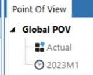
Figure 3.1
In Application Properties, the Global POV is set at the Default Scenario Type. The administrator will see that Global Scenario and Global Time can only be updated on the Default Scenario Type. Subsequent Scenario Types will find them non-editable and grey, as reflected in Figure 3.3 for the Administration Scenario Type.
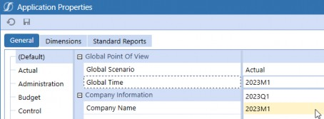
Figure 3.2
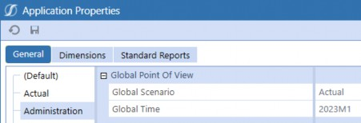
Figure 3.3
A common question we receive on Global POV is, “When would we want to consider using Global
POV?” The answer is, “It depends on your company’s requirements.”
We have seen companies that need to differentiate the use of Global POV versus Workflow POV versus Cube POV for custom business rules. OneStream has specific functions that retrieve the Global POV, as demonstrated in Figure 3.4.
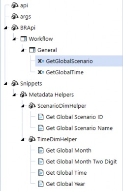
Figure 3.4
Naturally, the next question tends to be, “If we have a Global POV, does this mean that it will be enforced when we use it?” The answer to that is, “You have the option to choose True or False.” Business rules can reference Global Time or Global Scenario without needing Enforce Global POV set to be set to True.
However, if there is a need to enforce the Global POV, you will find the setting under the
Transformation section. For example, in Figure 3.5, True and False are selectable.
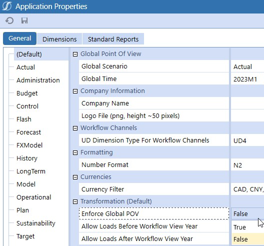
Figure 3.5
Furthermore, the administrator can differentiate whether to enforce the Global POV by Scenario Type. In Figure 3.6, on the Administration Scenario Type, notice that the options are (Default), True, and False. The (Default) setting means that the given Scenario Type will use the selection from Default.
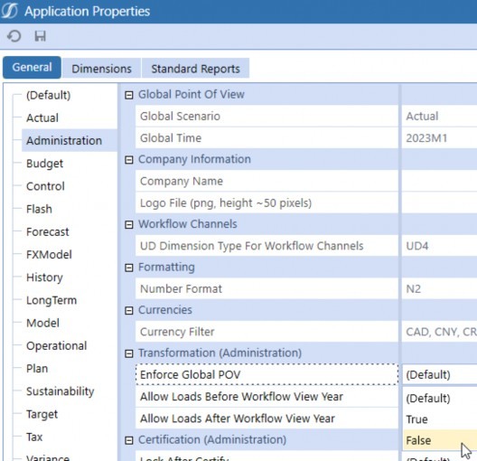
Figure 3.6
If the Enforce Global POV is set to True, this will enforce the current Global Scenario and Time for all users. This will specifically impact the Import workflow steps since a True setting will use the Global Time and Global Scenario instead of the Workflow Time and Workflow Scenario. In other words, if the user decides to load to a period that is not the Global Time, the import step will load to whatever the Global Scenario and Global Time is, which could be confusing to the end-user (assuming the user was attempting to load to a different period).
For example, in my very simple case, I have Global Point of View set to 2023M1 and Enforce Global POV as True.
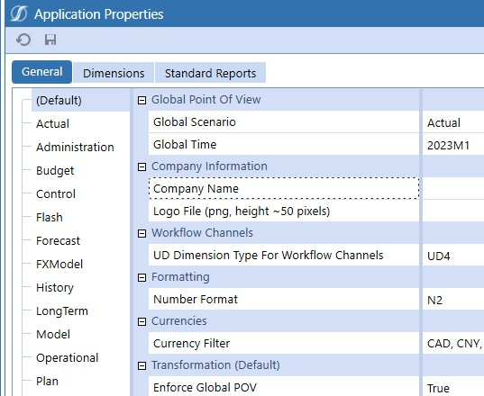
Figure 3.7
If I go to any import step that is not on 2023M1 (in this example, 2019M1) and attempt to load a file, I will receive a ‘success’ message, but nothing will actually show up in the Source Intersections pane for my user’s workflow period of 2019M1 (Figure 3.8).
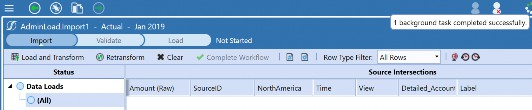
Figure 3.8
But if I go back to 2023M1, I will see my data loaded there.
Figure 3.9
However, if Enforce Global POV is set to False, users will continue to use the Workflow POV.
Application Properties
Transformation
In the Transformation section, you will find the Enforce Global POV, Allow Loads Before Workflow View Year, and Allow Loads After Workflow View Year settings.
The Workflow View Year, as the title suggests, refers to the year portion of your Workflow POV.
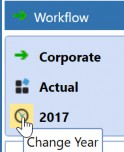
Figure 3.10
If Allow Loads Before Workflow View Year is set to True, this will allow data loading to time periods before the current workflow year. If this is set to False, data cannot be imported to time periods before the current workflow year. For example, if you had a data file with multiple years that you would like to load prior to the selected workflow year, you may want to update this setting to True.
If Allow Loads After Workflow View Year is set to True, this will allow data loading to time periods after the current workflow year. If False, data cannot be imported to time periods after the current workflow year. For example, if you had a data file with multiple years that you would like to load after the selected workflow year, you may want to update this setting to True.
These settings are also differentiable by Scenario Type. For a specific Scenario Type, the options are (Default), True, or False.
Application Properties
Lock After Certify
If the Lock After Certify setting is True, the system will automatically lock workflow steps that have been certified.
The risk with having Lock After Certify set as True is that administrators may involuntarily participate during the close more often because they have to unlock workflows. This could have a larger impact if users are located around the world and the administrator is in a different time zone. Generally, if this setting is desired, the recommendation is to enable the setting after a few months, as this gives users a chance to learn the process and prevent premature certification.
We need to cover the concept of locking here. Not only does a lock prevent the user from entering inputs directly into the application interface, but it also prevents users from entering inputs via Excel (whether Cube Views into Excel or XFSubmitCell formulas).
| Note: Lock After Certify works particularly well for workflow steps that have entity assignments. However, suppose you have workflow steps without entity assignments, and you need to lock those intersections by Data Unit as well. In that case, this setting will not prevent input to the items within those Workflow Profiles. (Remember, you can only assign one entity to one Workflow Input Profile.) |
Application Properties
Common Updates
Here are some of the most common updates we have seen administrators handle:
Expanding Application Start and End Years.
Updating descriptions for UDs.
Updating default logos or standardizing the formatting on PDF exports.
Adding currencies.
Enabling workflow channels.
Application Properties › Common Updates
Expanding Application Start and End Years
To expand the application’s start and end years, navigate to the Dimensions tab of Application Properties. The Time Dimension section will have Start Year and End Year.
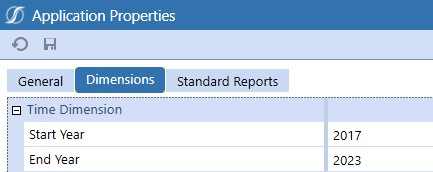
Figure 3.11
Limiting the time ranges a user can select for the Time dimension can be particularly useful. For example, let’s say you have had OneStream since 2010, and – as it is now 2024 – the 2010-2018 data does not really ‘matter’ to users as they are not referenced in reports. Updating the Start Year to 2019 sets accessible time members to 2019 onwards for user reporting. OneStream maintains the data for the years before 2019 if they have already been loaded, of course.
Application Properties › Common Updates
Updating UD Descriptions
UD dimensions can be updated with custom descriptions. The descriptions will display as part of tooltips and are viewable in the POV, dimension library, Cube View Member Filters, drill down dimension headers, and the Excel add-in/Spreadsheet.
Below is an example of UD1-UD3 having descriptions, while UD5-UD8 do not.
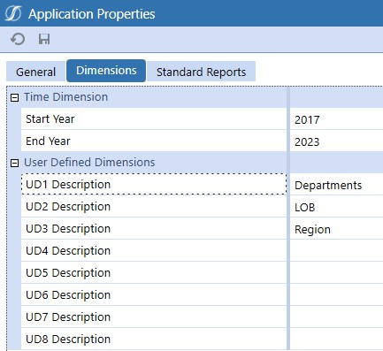
Figure 3.12
Below is an example of what the UD1-UD3 looks like to the user on the Excel add-in.
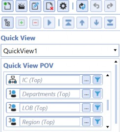
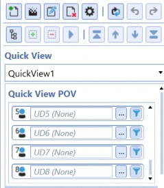
Figure 3.13
Application Properties › Common Updates
Updating Standard Logos or Standardizing Format
You can only add logo files on the Default Scenario Type under the Company Information section; there is only one logo for all reports.
In my example, I am using GolfStream, where I have the logo saved as
GolfSTream_GetBackToTheGreen_small.png.
Figure 3.14
In my Default scenario, I have updated Company Name and the Logo File accordingly, as shown in Figure 3.15.
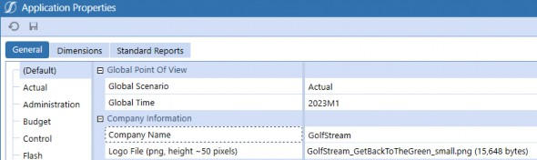
Figure 3.15
Now, when I run any Cube View in the application and export it as a PDF, the logo will be in the top left. Furthermore, there is a Standard Reports tab, which can be used to standardize the formatting for PDF exports. This can be found in Application Properties on Standard Reports (Figure 3.16).
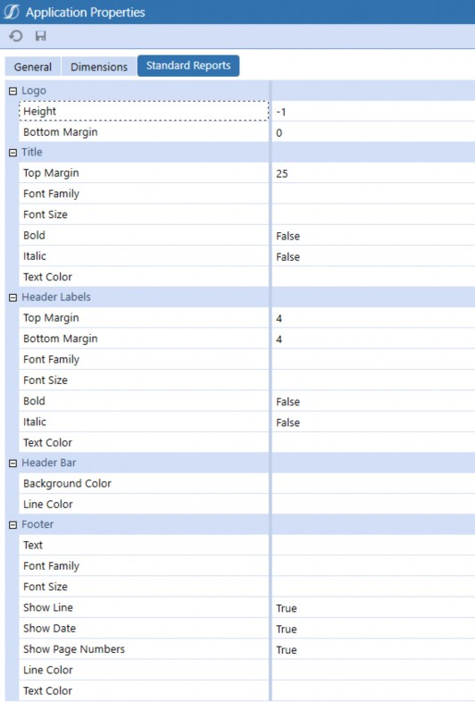
Figure 3.16
If I change the Title Text Color to BlueViolet (as per Figure 3.17), subsequent reports will have the title as Blue Violet, as we see in Figure 3.18.
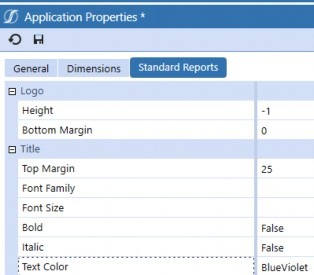
Figure 3.17
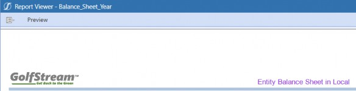
Figure 3.18
Application Properties › Common Updates
Adding a Currency
If your company has companies that utilize various currencies, you can add a currency through
Application Properties on the General tab.
You can only add currencies on the Default Scenario Type under Currencies. The system automatically makes the other Scenario Types’ Currency Filter non-editable while displaying the list of currencies that was selected from the Default Scenario Type.
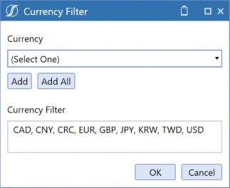
Figure 3.19
After adding these currencies, you can select from the drop-down for Currency on the base entity, as presented in Figure 3.20.
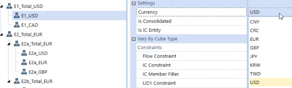
Figure 3.20
You will also see the currencies on the out-of-the-box FX Rates grid, as per Figure 3.21.
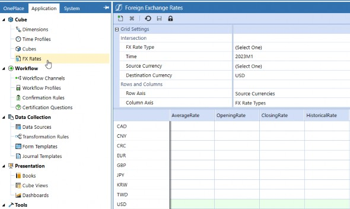
Figure 3.21
The list of currencies will also be part of the Flow dimension drop-down for Flow members with Flow Processing Type as Is Alternative Input Currency or Is Alternate Input Currency for All Accounts. Notice in Figure 3.22 that the drop-down for Alternate Input Currency is the list from Figure 3.19.
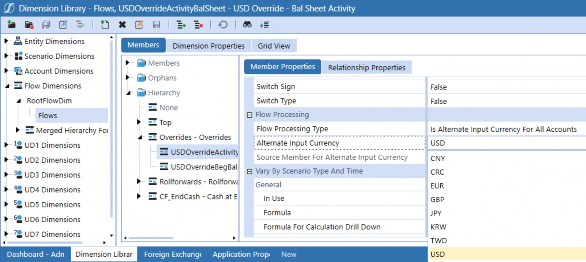
Figure 3.22
Application Properties › Common Updates
Enabling Workflow Channels
If your company chooses to use workflow channels based on UD, this is where you enable a UD workflow channel. Remember, you can only choose one UD. Refer to the workflow section of this book for further details on workflow channels.
If a specific UD dimension is not chosen – in other words (Not Used) is selected – this means that the application will use Account for workflow channels.
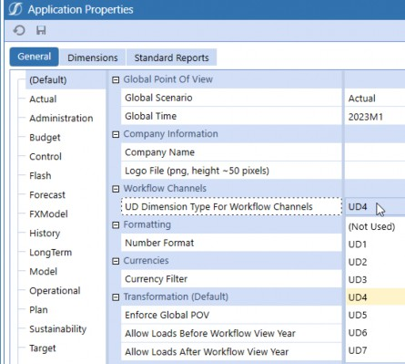
Figure 3.23
Application Properties
Conclusion
This short chapter covered common cases within Application Properties, including the use of Global POVs, application start and end dates, and workflow channels.
We also covered properties that can vary by Scenario Type (e.g., Enforce Global POV, Allow Loads Before Workflow Year, Allow Loads After Workflow Year, Lock After Certify), plus properties that can only be set on the default Scenario Type, which impact all Scenario Types (e.g., Global POV, calendar range, UD descriptions, standard logos, currency, workflow channels).
If you come across a setting on Application Properties that was not covered in this chapter and you suspect that you need to update it – but want to double-check how this setting is being used – refer to the OneStream Design and Reference Guide, as well as other materials covered in Chapter 1 of this book.